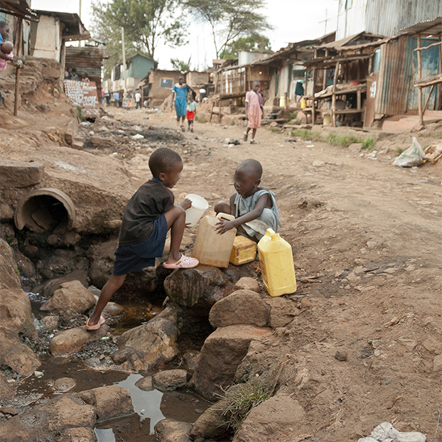
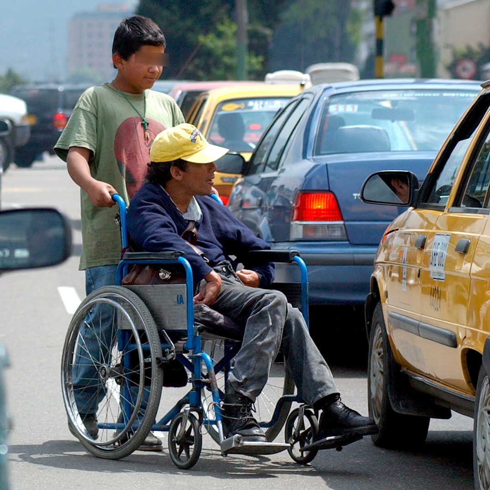
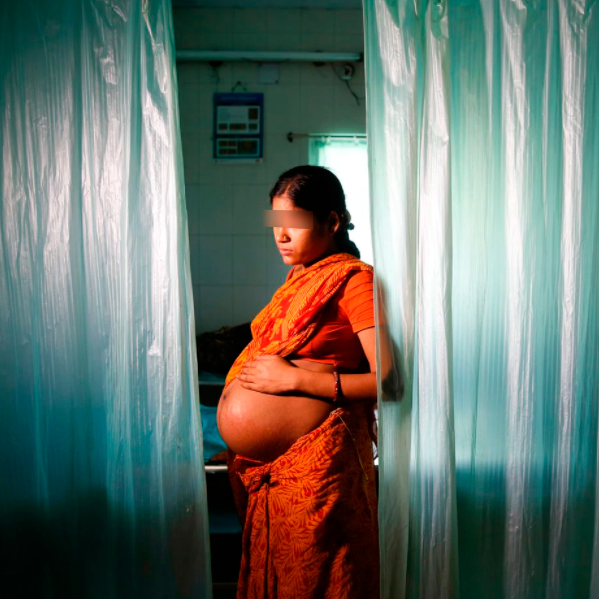

Indicador de desigualdad económica S80/S20 ha pasado de
5,6 en 2008 al 6,7 en 2017
En 2016, más del 64,4% de los productos que los países en desarrollo
exportaban a los mercados mundiales se encontraron con aranceles nulos, un aumento del 20%
desde 2010.
La evidencia de los países en desarrollo muestra que los niños en el 20 por ciento más pobre de la población tienen hasta tres veces más probabilidades de morir antes de cumplir cinco años que los niños en los quintiles más ricos.
La protección social se ha extendido significativamente en todo el mundo. Sin embargo, las personas con discapacidad tienen hasta cinco veces más probabilidades de enfrentarse a gastos de salud calificados de catastróficos.
A pesar de la disminución general de la mortalidad materna, en la mayoría de los países en desarrollo las mujeres de las zonas rurales tienen hasta tres veces más probabilidades de morir durante el parto que las mujeres que viven en centros urbanos.
Hasta el 30% de la desigualdad de ingresos se debe a la desigualdad dentro de los propios hogares, incluso entre mujeres y hombres. Además, las mujeres tienen más probabilidades que los hombres de vivir por debajo del 50% del ingreso medio.